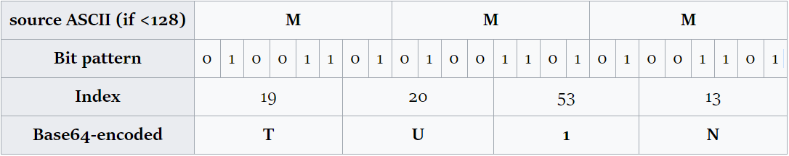
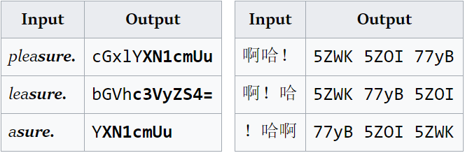

非标准base64破解-推断字符串索引
base64编码解码很容易，但是如果编码的人使用了自定义的索引，用通常方式就无法解码了。
概述
破解某记单词软件时，发现它的数据文件中有大量类似base64编码的字符串。用base64解码器解码得到了一堆乱码，那么这肯定不是标准的base64，而是使用了自定义索引的base64。遇到这种情况一般想办法得到几组原文和密文，再对照标准base64编码结果即可得出索引，再用这个索引解密其他密文。
base64具体编码过程看维基。base64中一个字符代表6位2进制数，一共使用64个字符。那么3个字节的数据 (3x8bit=24bit)编码后就变成了4个字符(4x6bit)。用这种方式可以推断出原文的长度，比如”MMMMMM”编码得到”TU1NTU1N”。

另外一方面，按三个字符一组划分原文，如果同一个字符在组中的位置不同，就无法得到相同的编码。如下图的pleasure，去掉p后因为s在三字符组中位置变更，所以编码结果完全不同。但是如果继续去掉l和e，这样s又回到了原位置，所以编码结果又变了回去。这点很重要。因为中文大多使用UTF-8编码，用三个字节表示一个汉字。这样只要原文全是汉字，那么无论某一个字在什么位置，他的编码结果都是相同的。

最后要注意的就是等号。等号只会出现在末尾，而且最多有两个。因为等号并不在64个字符的索引中，所以第一步要先确认等号是否被映射为别的字符，否则对推断索引影响很大。如果编码之中出现了等号，或者编码的结尾经常出现一个或两个某个固定字符，那一定是这个字符起了等号的作用。
过程
找几组原文密文
就如前文所说，尽量找汉字的原文。首先找到的就是单词解释。所以先找几组比较简单的单词解释和它对应的编码
分析
可以直观地看出，编码长度和解释是有关系的。解释多一个字，编码就会多4个字符，这也符合base64的特点；对解释进行正常的base64编码也得到了相同长度的结果。但是仔细观察就会发现，标准编码的前三位总是W+W，最后一位总是=。这是因为解释的前18bit总是固定的（”[“ => %5B “名” => %E5%90%BD “动” => %E5%8A%A8 “副” => %E5%89%AF …)，而且总字节数除3余2（有两个括号），所以总是补一个等号。但是自定义编码中却没有出现这种情况，那么只能有几种情况：1.编码前字符顺序被打乱了；2.编码后字符顺序被打乱了；3.词性不是按照中括号这样存储的。首先可以否定1，因为无论编码前怎么打乱，最后都要补等号，也就是最后一个字符应该相同，但是实际不同；2也可以否定，因为如果编码后被打乱，相同长度的编码打乱方式是一样的，那也应该有某几位是所有单词都一样的，实际上也没有。
猜
所以需要换一个思路。在所有编码中，最经常出现的就是ssU7，每一个编码里都有，又是还出现多次。根据出现的次数，可以大致推断ssU7可能表示中文的分号‘；’。用标准base64加密分号得到77yb，可以得到一个合理的推断： 7=>s y=>U b=>7。如果这个是正确的话，还可以证明：1.编码前被打乱了，因为在最后几个单词中，ssU7出现在了开头。2.编码后没有被打乱，因为ssU7和分号总是对应的。
假定这个想法是正确的，那就先记下来 7=>s y=>U b=>7， 然后顺着这条路继续走。继续观察可以发现第一条里出现两次k7qb，原文中也出现了两次“并”。对“并”编码得5bm2，就可以得到5=>k b=>7 m=>q 2=>b，其中b=>7之前也推出了相同的结论，所以可以大概确定是正确的了。
开始
按相同的方式，重复的汉字还有几个。按照相同的方式找到几组对应之后，特殊情况这种方法就不能使用了。但是已知的对应已经有很多，可以通过已知的对应来推导未知的。比如已知的有 sU7kqb， 用正则搜索一下包含这几个的编码，可以找到第二个单词的第一段ksUr。ksU是已知的，r是未知的。先把ksU按照对应方法变为正常的57y，然后对整个字符串进行标准的编码，并在里面找57y：缺席；缺乏 57y65bit77yb57y65LmP 可以看到57y6也就是“缺”。那么就可以得到新的对应6=>r。
一直推，最后可以得到一个对应的列表
标准： ABCDEFGHIJKLMNOPQRSTUVWXYZabcdefghijklmnopqrstuvwxyz0123456789+/=
自定； 3yxX4IB+/oNaEi8YCGzT02FOVZ67LeQ5nfcwhJqgPWlmMKSpuAU=9DbHdkrsj1tRv
写代码
写一个最简单的代码，完成这种自定义索引到标准base64的变换：
继续推断
随便找几条进行转换
可以看出，词性是通过“n. ,”这种形式表示的，而且字符串在编码前确实进行了打乱。具体怎么打乱的，就不讨论了。